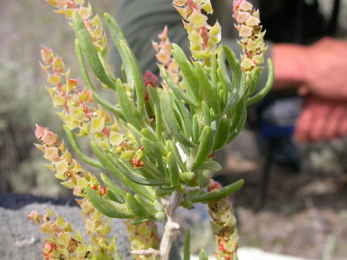

Sarcobataceae
Greasewood Family
Sarcobataceae is a small family, often treated as containing only the genus Sarcobatus, consisting of deciduous, spiny, succulent shrubs native to arid and semi-arid regions of western North America. These plants are highly adapted to grow in dry, alkaline or saline soils (halophytes). They feature small, linear, fleshy leaves, inconspicuous unisexual flowers (males in catkin-like spikes, females axillary), and a distinctive fruit – a winged utricle enclosed by the persistent, fleshy perianth.
Overview
The Sarcobataceae family, centered around the genus Sarcobatus (Greasewood), includes just one or two species of highly specialized shrubs. Sarcobatus vermiculatus is a dominant plant in many alkaline flats, playas, and desert valleys throughout the western United States and adjacent Canada and Mexico. Its presence often indicates saline or alkaline soil conditions unsuitable for many other plants.
These plants are well-adapted xerophytes and halophytes, with deep root systems to access groundwater and succulent leaves to store water and manage salt concentration. The common name "Greasewood" refers to the somewhat greasy feel of the leaves and the fact that the wood burns readily, even when green, due to its high content of sodium and potassium salts.
While providing cover for wildlife in harsh environments, Greasewood can be toxic to livestock (especially sheep) if consumed in large quantities due to high oxalate concentrations. Phylogenetically, Sarcobataceae belongs to the order Caryophyllales, related to families like Nyctaginaceae and Phytolaccaceae.
Quick Facts
- Scientific Name: Sarcobataceae
- Common Name: Greasewood Family
- Number of Genera: 1 (Sarcobatus)
- Number of Species: 1-2
- Distribution: Arid/semi-arid western North America.
- Evolutionary Group: Eudicots - Caryophyllales
- Habitat: Alkaline or saline flats, playas, desert valleys.
Key Characteristics
Growth Form and Habit
Much-branched, deciduous shrubs, typically 1-3 meters tall, often forming dense thickets. Stems are rigid and frequently end in sharp spines. Plants exhibit succulent characteristics and are adapted to dry (xerophytic) and salty (halophytic) conditions.
Leaves
Leaves are arranged alternately or sometimes oppositely, especially on lower parts or vigorous shoots. They are simple, entire, sessile or nearly so, typically linear or narrowly lanceolate, and distinctly fleshy (succulent). Leaves lack stipules (exstipulate).
Stems
Stems are woody, whitish or gray, rigid, and divaricately branched (spreading widely). Branch tips often become sharp spines.
Roots
Extensive root system, often with a very deep taproot to reach groundwater.
Sexuality and Inflorescence
Flowers are unisexual, small, inconspicuous, and wind-pollinated (anemophilous). Plants are usually monoecious (bearing both male and female flowers), sometimes dioecious.
- Male Inflorescence: Dense, terminal, catkin-like spikes (strobili), 5-30 mm long.
- Female Inflorescence: Flowers solitary or in small groups (2-3) in the axils of leaves, located below the male spikes on the same plant (in monoecious individuals) or on separate plants (in dioecious individuals).
Flowers
Flowers are highly reduced.
- Male Flowers: Lacking a perianth. Each male flower consists of 2-5 stamens subtended by a stalked, peltate (shield-like), spirally arranged bract within the spike.
- Female Flowers: Consist of a single pistil (ovary + stigmas) that is partly fused to and surrounded by a cup-like, persistent perianth (interpreted as calyx-like). The ovary is superior but adnate to the perianth tube. There are 2 linear stigmas.
- Ovary: Composed of 2 fused carpels, forming a functionally 1-locular ovary containing a single basal ovule.
Fruits and Seeds
The fruit is a small, dry, one-seeded utricle, which remains permanently enclosed within the persistent, now somewhat fleshy perianth. This entire structure develops a conspicuous, horizontal, membranous wing around its middle, aiding in wind dispersal.
The single seed contains a spirally coiled embryo and lacks endosperm.
Chemical Characteristics
Plants accumulate high levels of salts, particularly sodium and potassium oxalates, contributing to their toxicity to livestock and their adaptation to saline soils. They lack the betalain pigments found in many related Caryophyllales families.
Field Identification
Identifying Sarcobataceae (Greasewood) relies on its distinctive habit, habitat, and reproductive structures:
Primary Identification Features
- Habit: Spiny, often succulent shrub.
- Habitat: Arid/semi-arid alkaline or saline soils in western North America.
- Leaves: Alternate or opposite, linear, fleshy (succulent), entire, exstipulate.
- Male Inflorescence: Dense, terminal catkin-like spikes.
- Female Flowers: Axillary, solitary or few, with ovary fused to a cup-like perianth.
- Fruit: Dry utricle enclosed within the persistent, fleshy perianth which develops a prominent circular wing.
Secondary Identification Features
- Stems: Whitish/gray, rigid, ending in spines.
- Plant Sexuality: Usually monoecious (male spikes above female flowers).
- Flower Details: Male flowers lack perianth; female flowers have 2 stigmas.
Seasonal Identification Tips
- Year-round Features: Spiny shrub habit, stem color, and habitat are characteristic year-round. Fleshy leaves are present during the growing season (spring/summer).
- Flowering Season: Typically late spring to summer. Male catkins are relatively conspicuous; female flowers are very small.
- Fruiting Season: The distinctive winged fruits develop in late summer and fall and are highly diagnostic.
Common Confusion Points
Greasewood might be confused with other arid-land shrubs:
- Chenopodiaceae / Amaranthaceae (e.g., Atriplex, Grayia, Allenrolfea): Many salt-tolerant shrubs in this family occur in similar habitats. They often have mealy or scurfy leaves (not typically fleshy-linear like Sarcobatus), lack spines (usually), and have different flower structures (often with bracteoles enclosing the female flower/fruit, lacking the prominent winged perianth of Sarcobatus fruit).
- Zygophyllaceae (e.g., Larrea tridentata - Creosote Bush): Common desert shrub, but has opposite, pinnately compound leaves (2 leaflets) with prominent stipules and resinous coating. Flowers are yellow, 5-merous, fruit a fuzzy schizocarp.
- Asteraceae (e.g., Artemisia, Chrysothamnus): Many arid-land shrubs, but leaves are often lobed or dissected (though sometimes linear), usually aromatic, and flowers are arranged in characteristic composite heads. Fruit is an achene.
The combination of spiny habit, linear succulent leaves, male catkins, and especially the unique winged fruit enclosing the utricle in alkaline/saline soils of western North America is diagnostic for Sarcobataceae.
Field Guide Quick Reference
Look For:
- Spiny shrub (Arid W North America)
- Habitat: Alkaline/saline soils
- Leaves alt/opp, linear, fleshy
- Exstipulate
- Flowers unisexual (usually monoecious)
- Male flowers in catkin-like spikes, no perianth
- Female flowers axillary, ovary fused to cup-like perianth
- Fruit: Utricle enclosed in fleshy perianth with a circular wing
Key Variations:
- Plant sexuality (monoecious vs dioecious)
- (Only 1-2 species, little variation)
Notable Examples
The family is typically considered to contain only one genus, Sarcobatus:

Sarcobatus vermiculatus
Greasewood, Black Greasewood
The defining species of the family. A deciduous, spiny shrub common in alkaline and saline basins and flats of western North America. Exhibits all the key characteristics: fleshy linear leaves, male catkins, axillary female flowers, and winged fruits. An important indicator species for specific soil conditions.
Phylogeny and Classification
Sarcobataceae belongs to the large eudicot order Caryophyllales. This order is exceptionally diverse, including cacti, carnations, amaranths, beets, spinach, buckwheat, sundews, and pitcher plants (Nepenthaceae).
Historically, Sarcobatus was often placed within the Chenopodiaceae family (now largely included in Amaranthaceae) due to similarities in habitat and some vegetative features. However, distinct floral morphology (especially the male flowers lacking perianth and the unique winged fruit derived from the female perianth) and molecular phylogenetic data strongly support its placement in a separate family, Sarcobataceae. Molecular studies place Sarcobataceae within the core Caryophyllales clade, often closely related to Nyctaginaceae (Four O'Clock family) and Phytolaccaceae (Pokeweed family).
Position in Plant Phylogeny
- Kingdom: Plantae
- Clade: Angiosperms (Flowering plants)
- Clade: Eudicots
- Clade: Core Eudicots
- Order: Caryophyllales
- Family: Sarcobataceae
Evolutionary Significance
Sarcobataceae, though small, is significant for:
- Adaptation to Extreme Environments: Provides a clear example of specialization for survival in highly alkaline and saline, arid environments within the Caryophyllales.
- Unique Floral Morphology: The highly reduced, unisexual flowers (especially the perianth-less male flowers and the female flower fused to the perianth) represent a distinct evolutionary pathway within the order.
- Fruit Dispersal: The development of a winged structure from the persistent perianth surrounding the utricle is a specialized adaptation for wind dispersal in open habitats.
- Phylogenetic Placement: Its relationship with Nyctaginaceae and Phytolaccaceae helps clarify the complex relationships within the core Caryophyllales clade.